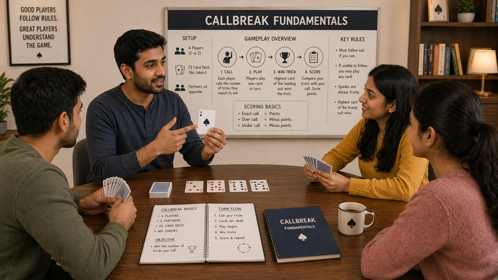

🪶 Introduction
Callbreak is a popular trick-taking card game widely played across South Asia, particularly in India and Nepal. It is typically played with 4 players in fixed partnerships, where players take turns playing cards to win tricks.
This guide will help you understand:
- Basic rules and card rankings
- Trump determination and gameplay flow
- Calling system and scoring
- Key concepts for beginners
🖼️ Callbreak Fundamentals Overview

🎯 What Is Callbreak?
Callbreak is a 4-player trick-taking card game played with a standard 52-card deck. Players form two opposing teams of two partners each, sitting across the table from one another. The objective is simple: win tricks by playing the highest card of the led suit, or play a trump card when you cannot follow suit.
Each round begins with players placing "calls" — announcing how many tricks they expect to win. The sum of all calls must equal at least the number of tricks available, creating collective accountability across both teams.
🃏 The Callbreak Deck and Card Values
Callbreak uses a standard 52-card deck with a specific ranking order that differs from typical Ace-high ranking in other games.
Card Rankings (Highest to Lowest)
The trump suit (determined each round) ranks above all other suits. Within a non-trump suit, the ranking from highest to lowest is:
- Ace (A) — Highest in its suit
- King (K) — Second highest
- Queen (Q) — Third highest
- Jack (J) — Fourth highest
- 10, 9, 8, 7, 6, 5, 4, 3, 2 — Descending in numerical order
🎴 How to Determine Trump
The trump suit changes each round and plays a decisive role in gameplay strategy.
How Trump Is Selected
- Before the first round, a card is randomly flipped to determine the initial trump suit
- In subsequent rounds, the trump suit typically rotates or follows a predefined schedule agreed upon by players
- Some digital platforms assign trump randomly each round
Why Trump Matters
Trump cards can defeat any card from other suits. A single trump card played at the right moment can win an entire trick, even against high cards like Aces or Kings. Understanding when to use your trump cards is one of the most critical skills in Callbreak.
🎮 Game Setup and Deal
Number of Players
Callbreak requires exactly 4 players, seated in alternating partnerships. Partners sit across the table from each other, creating two opposing teams.
The Deal
- A standard 52-card deck is shuffled and dealt evenly
- Each player receives 13 cards
- Cards are dealt face down; players hold their cards without showing them to others
Round Structure
- A round consists of all 13 tricks being played
- Multiple rounds make up a full game
- The number of rounds or total score to win is agreed upon before the game starts
📊 Understanding Calls and Scoring
Calling is what makes Callbreak distinct from simpler trick-taking games. Your call committing to a number creates accountability.
How to Call
At the start of each round, after looking at your 13 cards, each player announces how many tricks they expect to win. Players call in turn, with the first player making an initial call and subsequent players calling equal to or higher than the previous call.
Basic Scoring Rules
- If you win at least the number of tricks you called, you earn points equal to your call
- If you win fewer tricks than your call, you lose points equal to the shortfall
- If you exceed your call, some variants award bonus points for "overtricks"
- The target score to win is typically agreed upon before the game (commonly 150 or 300 points)
🔄 How Tricks Work — Step by Step
Winning tricks is the path to scoring points. Understanding the sequence of play helps you react appropriately.
Leading a Trick
- The first player of each round leads any card from their hand
- This card determines the "led suit" for that trick
- The card is placed face-up in the center of the table
Following Suit
Each of the other three players must follow suit if they have cards in the led suit:
- If you have cards in the led suit, you must play one of them
- If you do not have cards in the led suit, you may play any card, including trump
Winning the Trick
The trick is won by:
- The highest trump card played (if any trump cards were played)
- The highest card in the led suit (if no trump was played)
The winner of the trick leads the next trick.
📚 Key Terms and Vocabulary
Familiarity with Callbreak terminology helps you communicate with partners and understand advanced discussions.
Essential Terms
- Trick: A single round of play where each player contributes one card
- Trump: The designated suit that beats all other suits in a given round
- Fold: When a player cannot follow suit and plays a non-trump card
- Trumped: When a player cannot follow suit and plays a trump card to win
- Call: The number of tricks a player commits to winning
- Overtrick: Winning more tricks than called (bonus in some variants)
- Bag: A penalty condition when your team wins more tricks than called but below a threshold
- Set: When a team fails to meet their combined call
🎯 Basic Strategy for Beginners
Good fundamentals prevent common mistakes. Here is what to focus on early in your Callbreak journey.
Start with Strong Cards
When you have strong suits — those with high cards and sequence — consider making higher calls. Your ability to win tricks depends heavily on having playable high cards.
Pay Attention to the Led Suit
Always play your lowest playable card in the led suit unless you are trying to win the trick. Conserving high cards for key moments matters more than winning every early trick.
Communicate Through Play
You cannot speak during play in most versions, so your card play communicates intentions to your partner. Playing aggressively in a suit may signal you have strength there, while playing passively may indicate weakness.
👀 Reading Your Hand
Your 13 cards provide clues about what is possible in the round. Learning to read your hand quickly helps you call more accurately.
Evaluating Your Hand
Ask yourself:
- How many high cards do I have in each suit?
- How long is my longest suit? (Number of cards in a single suit)
- Do I have strong trump support?
- Are my cards concentrated in one suit or spread across suits?
🤝 Working With Your Partner
Callbreak is a team game. Your relationship with your partner is as important as your individual skill.
Partner Communication
Since verbal communication is restricted during play, use your cards to send signals:
- Playing a high card early may indicate strength in that suit
- Playing a low card may suggest your partner should lead that suit
- Conserving trump may indicate you are waiting for a specific moment
❓ FAQ
What is Callbreak?
Callbreak is a popular 4-player trick-taking card game played with fixed partnerships, where players call how many tricks they expect to win each round.
How many players are needed?
Callbreak requires exactly 4 players, seated in alternating partnerships with partners sitting across from each other.
What is the trump suit?
The trump suit is a designated suit that beats all other suits in a given round. It changes each round and plays a decisive role in gameplay strategy.
How does calling work?
At the start of each round, each player announces how many tricks they expect to win. If you win at least your call, you earn points. If you win fewer, you lose points.
Is Callbreak easy for beginners?
Yes. The game is easy to learn, especially if you start with the basic gameplay flow, card rankings, and calling system.
🧾 Summary
Callbreak fundamentals establish the foundation for skilled play:
- Understand the card ranking system and how trump works
- Learn to evaluate your hand honestly before making calls
- Master the sequence of trick play — leading, following, and winning
- Communicate with your partner through your card choices
- Practice reading your hand and anticipating common situations
The fundamentals covered here will serve you in every round. As you gain experience, you will develop sharper instincts for when to take risks, when to support your partner, and when to conserve your resources.
🔥 SEO Keywords
callbreak fundamentals, callbreak basic rules, how to play callbreak, callbreak trick taking, callbreak game guide, callbreak strategy for beginners, callbreak scoring system, callbreak partnerships